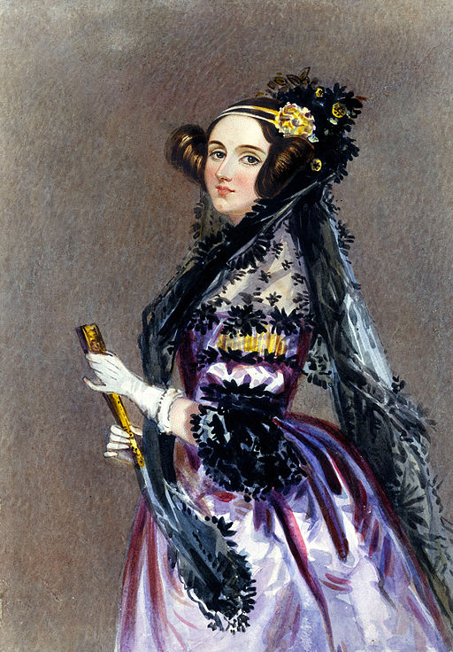

"That brain of mine is something more than merely mortal." She wrote the first algorithm meant for a machine — a century before there was a machine built to run it.

Ada Lovelace was born in London in 1815, the only legitimate child of the poet Lord Byron and Annabella Milbanke, a woman with an unusually rigorous mathematical education for her time. Byron left the marriage within weeks of Ada's birth and the two never met again. Wary of the "poetic" temperament she associated with her estranged husband, Annabella steered her daughter deliberately toward logic, geometry, and science, arranging tutors from an early age in a household that treated mathematics less as an accomplishment than as a discipline of the mind.
That grounding put her in rare company. Through family friend and mentor Mary Somerville, one of the era's few prominent female scientists, Ada was introduced into scientific circles most women of her class never entered. She later studied under Augustus De Morgan, a founding figure of modern logic, who recognized in his student a capacity for abstract mathematical thought he considered exceptional even among his university pupils.
In 1833, at seventeen, Ada met Charles Babbage and saw a working section of his Difference Engine — a machine built to calculate mathematical tables automatically. Where most visitors saw an impressive calculator, she saw something closer to a new kind of instrument, and the meeting began a correspondence and collaboration with Babbage that would last the rest of her life.
That collaboration reached its peak between 1842 and 1843, when Ada translated an Italian engineer's French-language paper on Babbage's unbuilt successor machine, the Analytical Engine. She didn't stop at translation — her own appended notes ran roughly three times the length of the original article. Buried in the section labeled "Note G" was a detailed, step-by-step method for the Engine to compute Bernoulli numbers: an algorithm, written for a machine that existed only on paper, decades before anything like a computer would run one. She went further still, suggesting the Engine's logic wasn't bound to numbers at all — that it might one day manipulate symbols, letters, even music. Ada died of uterine cancer in 1852, at thirty-six, having lived just long enough to publish the one paper history would remember her by.
"The Analytical Engine has no pretensions whatever to originate anything. It can do whatever we know how to order it to perform."
— Ada Lovelace, Notes on the Analytical Engine, 1843
Daughter of Lord Byron and Annabella Milbanke; her parents separate within weeks.
Sees a demonstration of the Difference Engine at seventeen and begins a lifelong collaboration.
Marries William King, later created Earl of Lovelace, giving her the title she's known by today.
Her Note G contains a full method for computing Bernoulli numbers — the first algorithm written for a machine.
Uterine cancer ends her life a decade after her one major published work — a legacy that took another century to be understood.